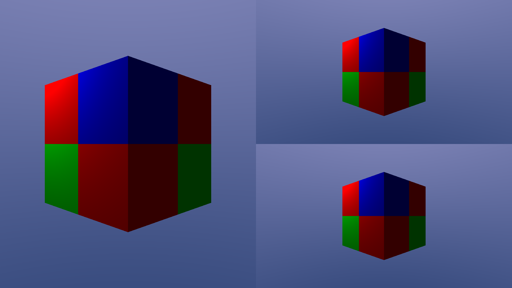

Renderer
Using the Renderer plugin.
This example shows how the Renderer plugin can be used and configured with a simple scene, lighting and split-screen rendering.
The plugin function is included from the engine/
In this sample we also use the split-screen plugin which automatically sets the viewport of each camera to achieve split-screen.
cubos.plugin(settingsPlugin); cubos.plugin(windowPlugin); cubos.plugin(transformPlugin); cubos.plugin(assetsPlugin); cubos.plugin(screenPickerPlugin); cubos.plugin(rendererPlugin); cubos.plugin(splitscreenPlugin);
The first thing we're going to worry about is setting the VoxelPalette the renderer will use. This palette would usually be loaded from a file, but for this example we'll just create it manually.
Since this system accesses the Renderer resource, which is only initialized on the tag cubos.renderer.init, we should specify that it must run after it.
cubos.startupSystem("set the palette").after(rendererInitTag).call([](Renderer& renderer) { // Create a simple palette with 3 materials (red, green and blue). renderer->setPalette(VoxelPalette{{ {{1, 0, 0, 1}}, {{0, 1, 0, 1}}, {{0, 0, 1, 1}}, }}); });
We should also spawn a voxel grid, so we have something to render.
cubos.startupSystem("create a voxel grid").call([](Commands commands, Assets& assets) { // Create a 2x2x2 grid whose voxels alternate between the materials defined in the palette. auto gridAsset = assets.create(VoxelGrid{{2, 2, 2}, {1, 2, 3, 1, 2, 3, 1, 2}}); // Spawn an entity with a renderable grid component and a identity transform. commands.create().add(RenderableGrid{gridAsset, {-1.0F, 0.0F, -1.0F}}).add(LocalToWorld{}); });
If we don't add any lights, the scene will be completely dark. Lets add a simple PointLight.
cubos.startupSystem("create a point light").call([](Commands commands) { // Spawn a point light. commands.create() .add(PointLight{.color = {1.0F, 1.0F, 1.0F}, .intensity = 1.0F, .range = 10.0F}) .add(Position{{1.0F, 3.0F, -2.0F}}); });
We can also add some ambient lighting, and even add a sky gradient, through the RendererEnvironment resource.
cubos.startupSystem("set the environment").call([](RendererEnvironment& env) { env.ambient = {0.2F, 0.2F, 0.2F}; env.skyGradient[0] = {0.1F, 0.2F, 0.4F}; env.skyGradient[1] = {0.6F, 0.6F, 0.8F}; });
Lastly, without a camera, we won't be able to see anything. Cameras can be set using the ActiveCameras resource.
cubos.startupSystem("create cameras").call([](Commands commands, ActiveCameras& camera) { // Spawn the a camera entity for the first viewport. camera.entities[0] = commands.create() .add(Camera{.fovY = 60.0F, .zNear = 0.1F, .zFar = 100.0F}) .add(Position{{-3.0, 1.0F, -3.0F}}) .add(Rotation{glm::quatLookAt(glm::normalize(glm::vec3{1.0F, 0.0F, 1.0F}), glm::vec3{0.0F, 1.0F, 0.0F})}) .entity(); camera.entities[1] = commands.create() .add(Camera{.fovY = 60.0F, .zNear = 0.1F, .zFar = 100.0F}) .add(Position{{-3.0, 1.0F, -3.0F}}) .add(Rotation{glm::quatLookAt(glm::normalize(glm::vec3{1.0F, 0.0F, 1.0F}), glm::vec3{0.0F, 1.0F, 0.0F})}) .entity(); camera.entities[2] = commands.create() .add(Camera{.fovY = 60.0F, .zNear = 0.1F, .zFar = 100.0F}) .add(Position{{-3.0, 1.0F, -3.0F}}) .add(Rotation{glm::quatLookAt(glm::normalize(glm::vec3{1.0F, 0.0F, 1.0F}), glm::vec3{0.0F, 1.0F, 0.0F})}) .entity(); });